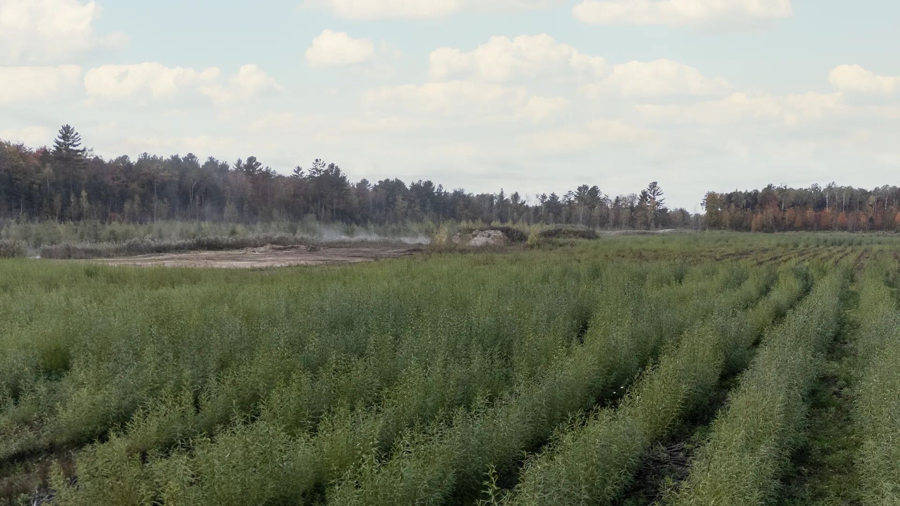

Le contexte
La Sablière Demers, située à Mirabel, faisait face aux enjeux typiques des secteurs arrivés en fin d'exploitation :
- faible matière organique
- érosion éolienne et hydrique
- instabilité des sols
- colonisation par des espèces opportunistes
Le projet visait la mise en place rapide d'un couvert végétal structurant capable d'accélérer la restauration progressive du site.
La solution mise en place
Ramo a implanté une végétalisation intensive à base de saules à croissance rapide et d'essences complémentaires sur plusieurs secteurs de la sablière.
Le projet comprend :
- jusqu'à 7 ha de plantation active
- jusqu'à 268 800 arbres et saules implantés
- valorisation de matières résiduelles fertilisantes (MRF)
- implantation mécanisée
- restauration progressive des cellules exploitées

Résultats et bénéfices
Stabilisation rapide des sols
Implantation rapide d'un couvert végétal limitant l'érosion et les déplacements de particules.
Réduction des espèces envahissantes
Occupation rapide du site par les plantations.
Amélioration des propriétés physicochimiques
Apport de matière organique via les MRF valorisées sur site.
Restauration progressive
Intégration des travaux directement dans l'évolution opérationnelle du site.

Lecture technique du projet
Un enjeu similaire ?
Contactez-nous.
Notre équipe est disponible pour discuter de vos besoins en végétalisation de sites miniers.